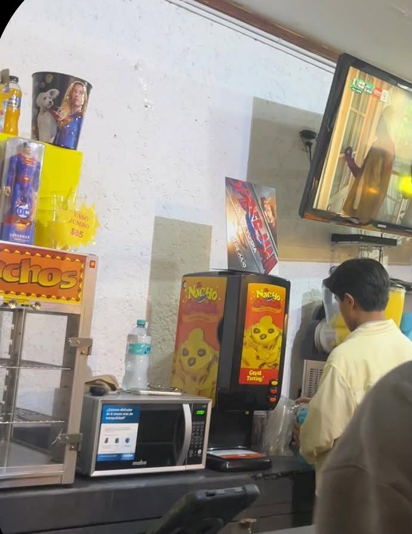
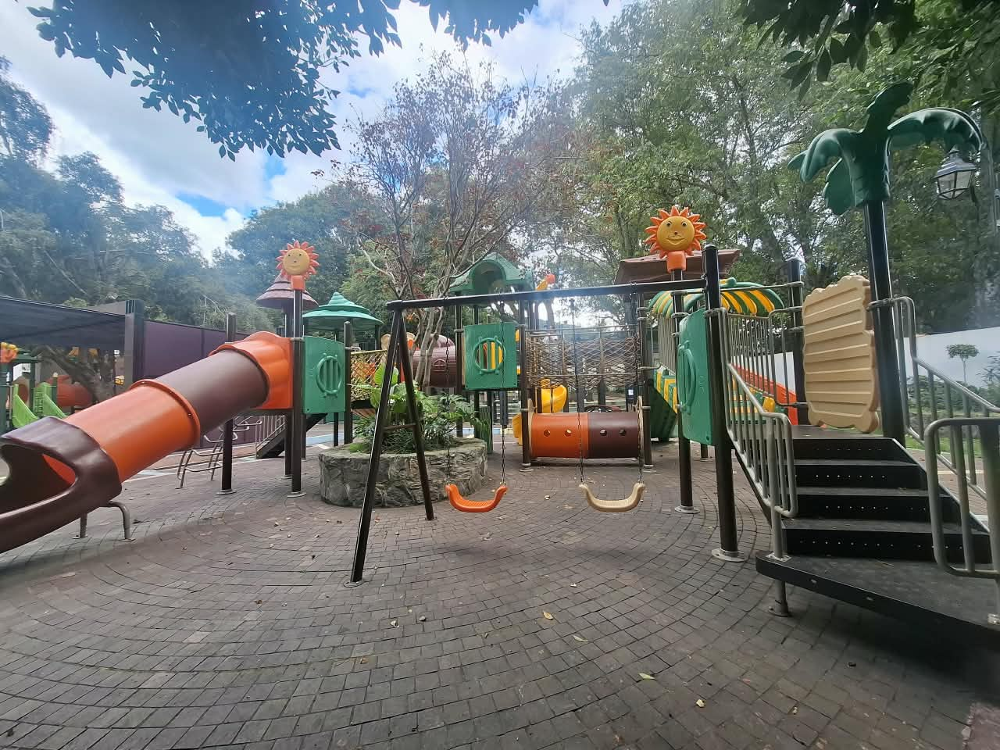

El cine en Valle de Bravo, Estado de mexico, es una opcion de entretenimiento para los habitantes y visitantes del municipio.
Las salas de cine permiten disfrutar de peliculas dediferentes generos, como accion, comedia, terror, romance y animacion, en un espacio con pantalla grande y sonido envolvente.
Ademas de ser un lugar divertido con amigos y familia, el cine es una forma de expresion artistica y cultural, por que las peliculas cuentan historias, muestran distintas costumbres y transmiten mensajes sobre sociedad.
En Valle de Bravo el cine representa una alternativa creativa tanto para los habitantes del municipio como para los turistas que visitan este destino.

Ea un parque publico infantil de Valle de Bravo, creado para las niñas y niños para que tengan un lugar dedicado al juego, la recreacion y la convivencia.
Son espacios que buscan falisitar que niños con distintas capacidades puedan participar en actividades recreativas.
Este parque es inportante para la comunidad por que ofrece a la niñez un espacio publico para divertirse,convivir y aprender.
